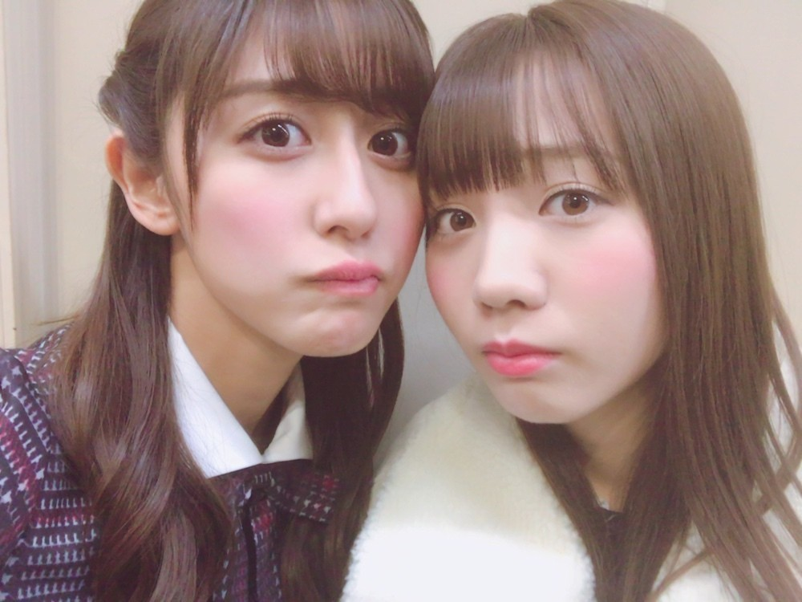

| 2017/01 17 Tue | 日差し。 |
ちはるーむへようこそ。
この日日差しが眩しかったの！
とても。
すこーし眩しそうな顔してるの分かるかな？笑
眉毛が...！
--------------------------------♡
！ChihAnswer！
 おーるさん
おーるさん
・レポートとテスト、あと何個残っていますか？
→レポートは2個終わったからあと１つ！
でも英語のレポートなの...
テストはまだあと10個くらいある(> <)笑
きゃー頑張らなきゃー
時間が欲しいよー
あれんさんじゅうよんさん
・ちーちゃんはスキーとかスノボやるの？
→スキーは、小学校の頃得意だった！
確か林間学校は上級者コースだったような
気がするようなしないような...
でもいまは全然出来なさそう(> <)
スノボはやった事ない...！
足折っちゃいそうで怖いの...
たかきさん
・パジャマはサラサラ派？モコモコ派？それともそれ以外派？
→斎藤家は暖房をあまり付けないので
寒いので、モコモコ着てます。
それも重ねに重ねて着ているので
体がいつもよりふた回りくらい大きめです。
でも理想はサラサラ派！
サテン生地のおっしゃれーなやつに
憧れを持っています。
こいんさん
・乃木中一次会でこれ喋ったのにカットされたみたいなところある？
→沢山ありますよ〜
将来の話成人の話普段の話乃木の話その他諸々
色々喋ったんだけどな(> <)
残念ながら放送されず(> <)
頑張らなきゃ。
うさぎさん
・「るーむめいと」とはどんな人を指すのですか？
→「斎藤ちはるを少しでも応援したい！」
と思ってくれている方、
皆さんのことを指しています。
もっともっと「ちはるーむめいと」の輪が
広がりますように\( ˆ ˆ )/
今日はここまで！！
いつも質問くださる皆さんありがとうございます◎
また待ってます◎

能條 牧場 ユニット 希望
yoyo
----------------------------------------♡
♬ ChihaMusic
「明日への賛歌」flumpoolさん
歌詞に共感しすぎて
自分にぴったりすぎて
驚いたのと涙が出そうになった。
大好きな曲です。
特に2番の歌詞により共感する。
"「いつでも優しい人」って 君は慰める
だけど 挑戦者で 常にありたい"
優しいだけじゃだめ。
自分を変える勇気を持つこと。
悩んでも迷っても転んでも止まってもいい
この部分にも胸打たれる。
なんていい曲なんだろう...！
今日は1/17。
阪神淡路大震災から22年が経ちました。
生まれていないからこそ
知っておくべき事だと思います。
当たり前の日常は当たり前ではないということを考えさせられます。
今を大切に。
御冥福をお祈り申し上げます。
斎藤ちはる
コメント(335)
2017/01/17 23:58